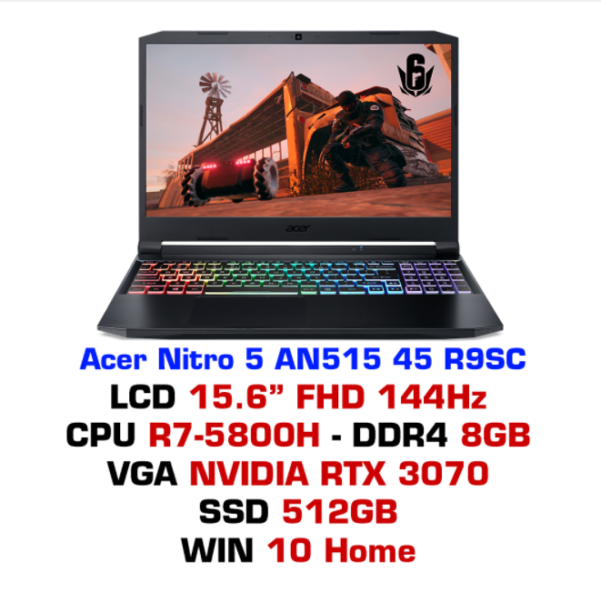

Laptop gaming Acer Nitro 5 AN515 45 R9SC
Nhà sản xuất : ACER
Xuất sứ : Chính hãng
Bảo hành : 12 Tháng
Tình trạng : Mới 100%
KHUYẾN MÃI :
- RAM Sodimm 8GB
- Balo Acer Predator SUV
- Túi chống sốc LAPTOPVN 15
Ưu đãi đặc biệt khi mua kèm LOPTOP :
- Mua thêm 1 thanh RAM Sodimm 8GB chỉ với 990.000
- Mua kèm màn hình giảm sốc lên đên 49%
- Mua kèm các sản phẩm khác giảm giá lên đến 56%
- Hỗ trợ trả góp MPOS (Thẻ tín dụng), HDSAISON.
Giá : 1500$